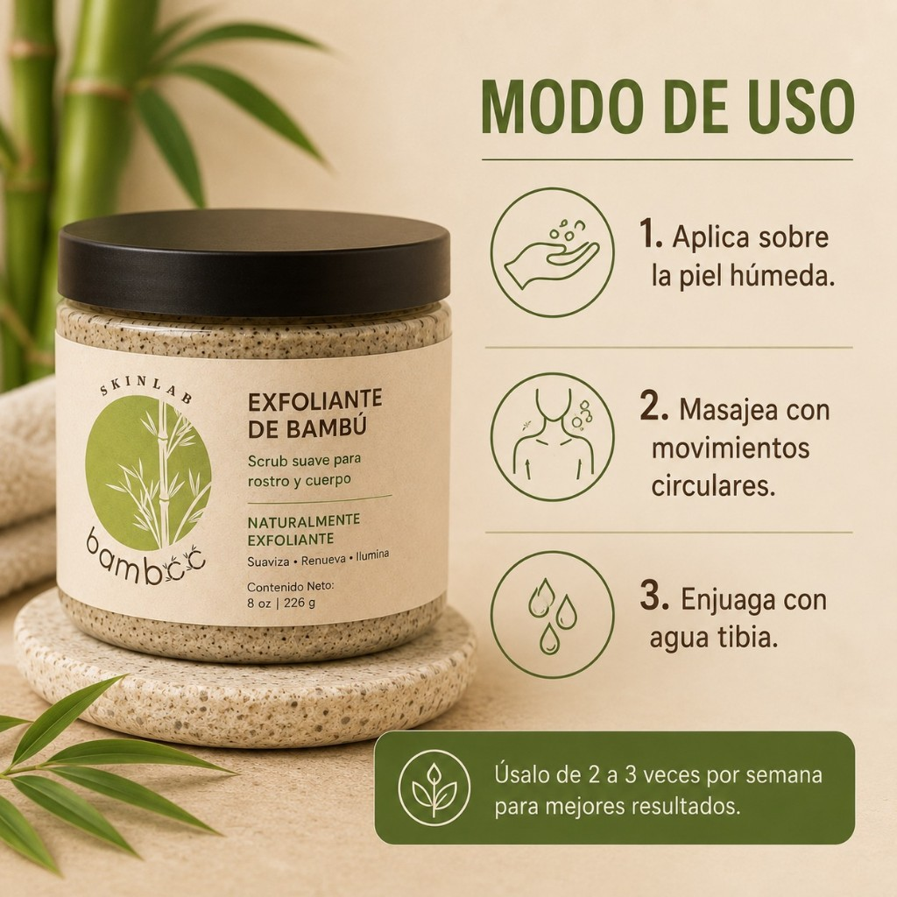
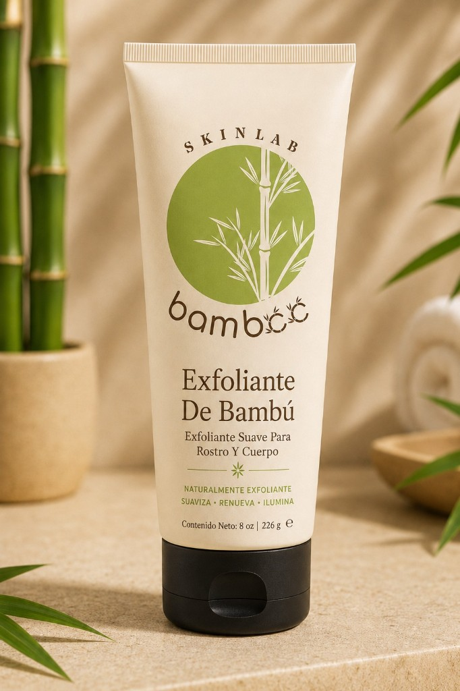
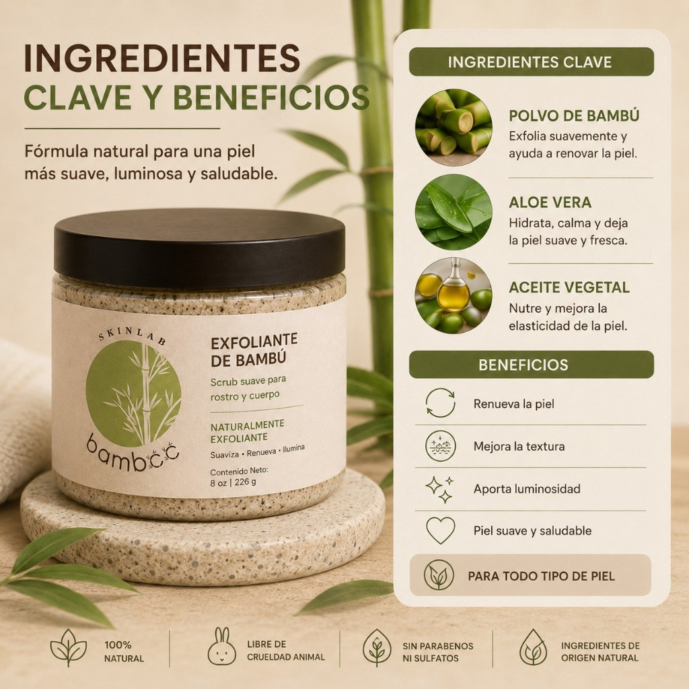

Beneficios principales
Todo lo que tu piel necesita
Descubre los múltiples beneficios de la esencia de bamboo en cada aplicación.

Rutina diaria
Piel radiante
Bamboo puro
Regeneración celular
Estimula la renovación natural de la piel, promoviendo una tez más joven y vital.

Limpieza profunda
Penetra en los poros eliminando impurezas, contaminación y residuos acumulados.

Control del exceso de grasa
Regula la producción de sebo sin resecar, ideal para pieles mixtas y grasas.
Hidratación natural
Mantiene el equilibrio hídrico de la piel con ingredientes botánicos hidratantes.
Antioxidantes naturales
Protege contra los radicales libres y el estrés oxidativo del día a día.

Exfoliación suave
Micro-partículas de bamboo que exfolian delicadamente sin irritar.

Cuidado para diferentes tipos de piel
Formulado para adaptarse a pieles normales, secas, mixtas, grasas y sensibles. Una solución universal respaldada por la naturaleza.